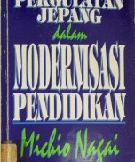
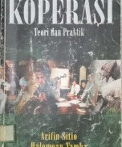
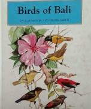

Perpustakaan Universitas Udayana

Judul:Pergulatan Jepang Dalam Modernisasi Pendidikan
Tahun Terbit: 1993
Nama Penerbit: Gramedia Pustaka Utama
ISBN: 979-511-659-2
Judul:Hill Dictionary Of Mathematics
Tahun Terbit: 1996
Nama Penerbit: Mcgraw-Hill
ISBN: 0-07-052433-5

Judul:Koperasi Teori Dan Praktek
Tahun Terbit: 2008
Nama Penerbit: Erlangga
ISBN: 979-688-174-8

Judul:Birds Of Bali
Tahun Terbit: 1989
Nama Penerbit: Periplus
ISBN: 0-945-971-04-4